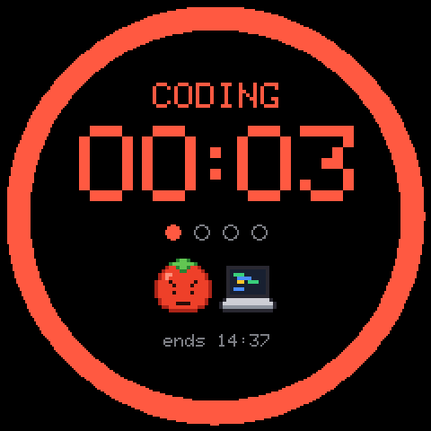
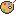
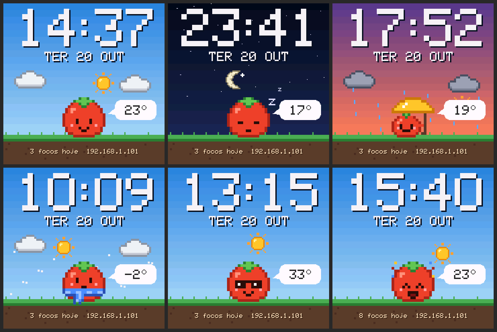
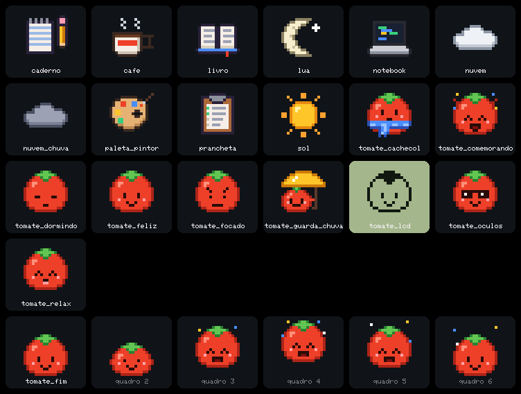

Focus on your desk.
Not on your phone.
A Pomodoro timer with a pixel art tomato, clock faces, weather and a web panel on your phone, running on your SmallTV Ultra. No account, no cloud and no cable to install.

What it is
The clock: GeekMagic SmallTV Ultra
A small desk cube with Wi-Fi and a 240×240 colour screen (ESP8266 chip and ST7789 display). From the factory it shows the time, weather and photos, with GeekMagic's closed firmware.
The firmware: SmallTV Pomodoro
A new program for the same device, written from scratch and open on GitHub. You install it from the clock's own web page, like a regular update, and it gains new clock faces, a Pomodoro timer and the tomato.
Is this my device?
On the Ultra, the factory firmware is branded Ultra (its web page shows a version like Ultra-V9.0.x). For other models, the partner project smalltv-mod by giovi321 runs on five clocks from the same family.
Up close
The clock's screens, rendered by the project's simulator with the same code as the firmware.
Focus: the red ring fills up until the end of the phase, with the countdown and the end time. The tomato concentrates next to the activity's object. (sped up)
In the panel you pick the focus activity, and its object shows up next to the tomato:
ReadStudyCodeTasks
Draw

Clock faces
13 ship with the firmware and the gallery has 41 more to install: Bento, Synthwave, Terminal, Aquarium, Station and others. The panel installs each one without reflashing, and “Show on clock” tries it for 15 s without saving.
Everything that comes with it
Weather
From Open-Meteo, no sign-up or API key. A 5-day forecast, °C or °F, and a warning when rain starts within the hour.
Focus game
Day streaks, a yearly garden, 10 achievements and a year of focus sessions kept on the clock. See the game.
Photos and GIFs
Upload them from the panel; the browser crops them to 240×240. The clock checks every GIF before showing it.
Night brightness
The screen dims from sunset to sunrise, or on a schedule you pick.
Alexa
“Alexa, turn on Pomodoro”: start, pause and stop the timer by voice on your local network, with no account or skill. How to set it up.
Web panel
On your phone or computer, in three languages. Optional password, backup, diagnostics and one-tap updates, checked and signed before the firmware is replaced.
How to install
No cable and no software on your computer: everything happens in the browser, on a 2.4 GHz Wi-Fi network.
SmallTV Pomodoro
.bin file to upload on the clock's page.
-
Upload it on the factory page
Open the IP the clock shows in your browser, go to Firmware Upgrade, pick the
.binand upload it. The clock restarts by itself. -
Connect it to Wi-Fi
If the clock does not join your network by itself, scan the QR on its screen with your phone and pick yours.
If it does not connect, do not unplug the clock to try again: 3 restarts in a row open recovery mode.
-
Open the panel
Type the IP shown on the screen in your browser (or
http://smalltv.local/), pick a face and your weather city, and start a focus session.
Got ERROR[4]: Not Enough Space, a black screen or Wi-Fi that will not connect? The full guide covers each case, recovery mode and the status of going back to the original (on hold for now).
For tinkerers
- Make a clock face in JSON, no compiling (guide in Portuguese)
- Make a face in the firmware (C++)
- Draw pixel art: one
.txtper sprite - PC simulator, no flashing needed
Credits and licenses
- Code, pixel art and clock faces under the GPL v3 license: use, study, change and share them; modified versions you distribute must also be GPL, with their source code
- Pinout: ESPHome devices
- Color order and loader: giovi321/smalltv-mod
- DSEG7 Classic (keshikan), Bebas Neue (Dharma Type), Outfit and Righteous, SIL Open Font License 1.1 (licenses), converted to polygons
- Weather: Open-Meteo
- Adafruit GFX and ST7789, ArduinoJson, JPEGDEC and AnimatedGIF (bitbank2), uzlib and Project Nayuki's QR generator